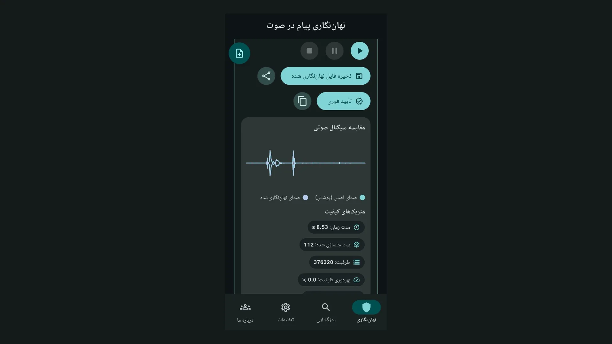
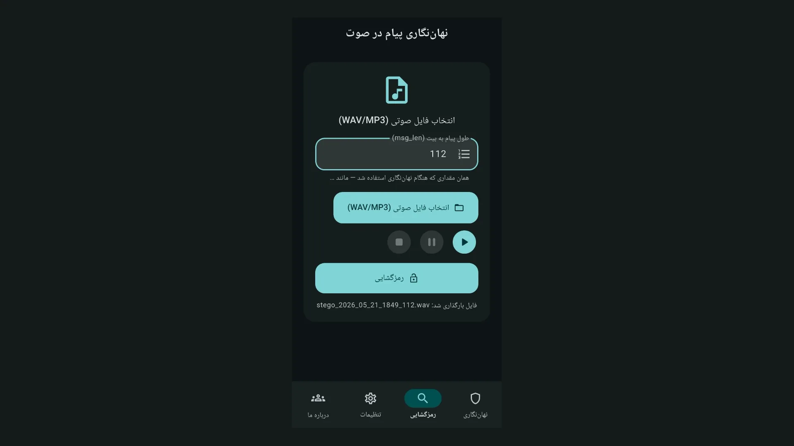
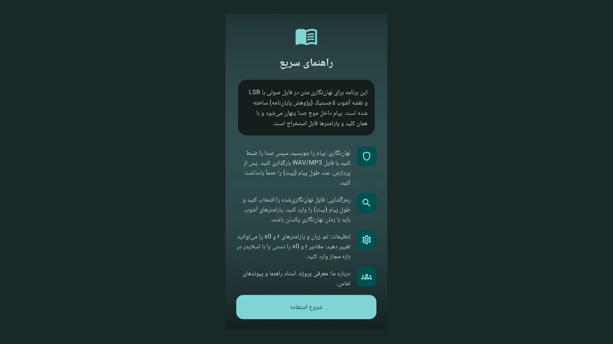

Keywords: audio steganography, Audio Stegano, LSB, logistic chaos map, Android app, steganography tutorial
Audio Stegano is an Android app for audio steganography. Your text is hidden inside a sound waveform. Recovery needs the same key and message length in bits. All processing runs on your device.
In information security, steganography hides the very existence of a secret message. Encryption makes content unreadable. Steganography hides the message inside another medium. Audio Stegano applies this idea to audio files.
The app is part of thesis research on stealth audio steganography via logistic chaos mapping. Developer Alireza Karavi and NTK support the project. Technical details are on GitHub.
For more on signal processing and NTK apps, visit XWave. See also XWave apps. A Persian version of this article is available.
The Android build of Audio Stegano uses package ID ir.ntk.audiowmark.app. It is listed on Myket. Install from the official store only. Tap the banner below to open the download page.

Read more about audio wave processing and NTK projects at xwave.ir. This post is part of the same educational content series.
The LSB algorithm uses the least significant bit of each PCM sample to carry message bits. Changes are tiny. Human ears usually cannot hear the difference. Listening quality stays high.
A random key comes from the logistic chaos map. Parameters seed, r, and x0 define the key bit stream. Without all three and the message length in bits, extraction fails.
Input text is encoded as UTF-8, then as a bit stream. A 32-bit length header is included. Output is a WAV file with 16-bit PCM samples.
The current release uses an Autoencoder layer to improve message robustness. It reduces certain error modes. See GitHub docs for the full pipeline.
The UI supports Persian, English, Arabic, and French. Light and dark themes are built in. Accent color is configurable.
Four main tabs: Embed, Extract, Settings, and About. A quick guide appears on first launch. The ? icon opens the full in-app help.
After embedding, metrics such as SNR, PSNR, BER, NPCR, and UACI are shown. Tap any metric for a detailed explanation. Numbers help you judge embedding quality.
The instant verify button extracts and compares the message right away. Confirm success before sharing the file with others.


In cybersecurity courses, students can see steganography in action with Audio Stegano.
The difference between encryption and steganography becomes clear in one session.
Researchers can tune chaos parameters. They watch how r and x0 affect BER and SNR live. That helps thesis work and papers.
Everyday users can hide a short note inside a personal audio clip. The file looks like a normal WAV. Only someone with the key and bit length can read the text.
This tool is meant for research and education. Illegal use or privacy violations are not allowed. Users are responsible for how they apply it.
Audio and text are processed on your phone. The current release does not auto-upload data to a server. Files leave the device only when you share them.
Microphone access is for recording in the Embed tab. Storage access lets you pick WAV or MP3 files. Permission reasons are documented on the Myket listing.

Always save the message length in bits together with your key values. Extraction is impossible without that number. Store it in a secure note or send it separately.
Do not recompress the output WAV. Sending as a voice message in WhatsApp or Telegram often destroys hidden data. Share the file as a document attachment instead.
Message length and audio capacity are limited. For long text, use a longer cover clip. The app shows a capacity warning when needed.
Parameters r and x0 must match on both embed and extract sides. Even a tiny change in x0 produces a completely different key.


Besides Android, Flutter builds exist for Windows and Linux on GitHub. A WPF desktop client uses .NET 10. The core algorithm behaves the same across clients.
For daily phone use, the Myket build is enough. Clone the repo to experiment on a PC. Build steps are in the repository README.
This section assumes you installed the app from Myket. Follow each step in order. You will hide and recover a sample message.
Open the Myket link and tap Install. Find the Audio Stegano icon on your home screen. On first open, a short splash screen appears.
The app asks for your UI language. Pick English or any language you prefer. You can change language later in Settings.

A quick guide screen explains the app goal and main steps. Tap Get started to enter the main UI.

Before your first embed, open the Settings tab. Choose light or dark theme. Note the default seed, r, and x0 values.
If you work with a partner, agree on the same values for both phones. Adjust r and x0 with sliders or manual entry. Leave Settings so values are saved.
Write these three values in a safe place. You need them with the bit length for extraction. Without them, the receiver cannot read the message.
Go to the Embed tab. Type your message in the text box. Example: “Hello — this is a test.”
Pick an audio source. Option A: tap Start Recording. Speak for a few seconds. Tap Stop Recording.
Option B: tap Upload file. Choose a WAV or MP3 from storage. The clip must be long enough for your message.
Processing starts automatically. Wait a few seconds. A progress indicator shows status. Errors appear as on-screen messages.
When done, a dialog shows the message length in bits. Copy or write down that number. This is the most important step in the tutorial.

Compare cover and stego waveforms. Higher SNR usually means quieter changes. Tap metrics to read help text for each one.
Tap Verify to extract immediately. If the text matches your input, embedding succeeded. If not, check capacity or key parameters.
Tap Save stego file and pick a folder. The file name usually ends with .wav.
To share, use the share icon. In messengers, pick Send file or Document. Do not pick Voice message.
Tell the receiver: the WAV file, bit length, and values for r, x0, and seed. They can read seed in Settings.
The receiver installs the app and sets the same key in Settings. They open the Extract tab.
Tap Pick audio file and select the WAV you sent. On Android, Open with → Audio Stegano also works.
Enter the exact bit length the sender gave you. One wrong digit breaks the output.
Tap Extract. Recovered text appears in the result card. Tap Copy to put it on the clipboard.
If text is empty or garbage, check bit length first. Then compare r, x0, and seed with the sender. Small mismatches fail completely.
If the file came from a messenger, ask whether it was sent as a file or as voice. Voice mode often destroys hidden data. Request the original WAV again.
If capacity was too low, shorten the message or use a longer cover clip. The app shows a capacity warning when needed.
For more help, tap ? in the app bar. Full help repeats these steps. You can also visit xwave.ir.
For a new embed, tap New embed at the top of the Embed tab. Previous state is cleared. Pick a fresh message and audio source.
Each new embed may produce a different bit length. Write down the new number every time. Do not reuse an old bit count for a new file.
Pick a short message in English or Persian. Record five seconds of audio. Embed it and save the bit length. Tap Verify right away.
Without closing the app, switch to Extract. Load the same file. If text is correct, you are ready to share with others.
Repeat with an uploaded MP3 file. Try light and dark themes. Deliberately change r and see extraction fail. That teaches why keys must match.
Audio Stegano is a practical audio steganography tool using LSB and logistic chaos. Install from Myket, set keys, embed, save bit length, then extract.
Download from Myket. More articles appear on xwave.ir.